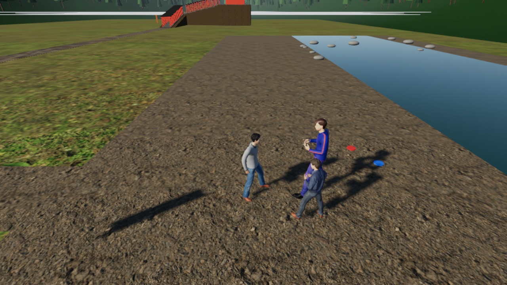
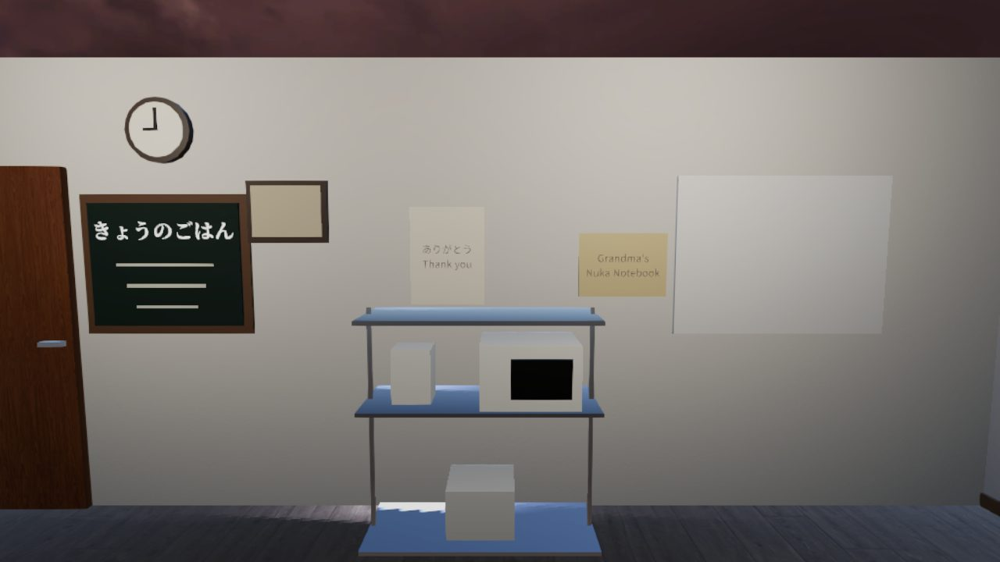
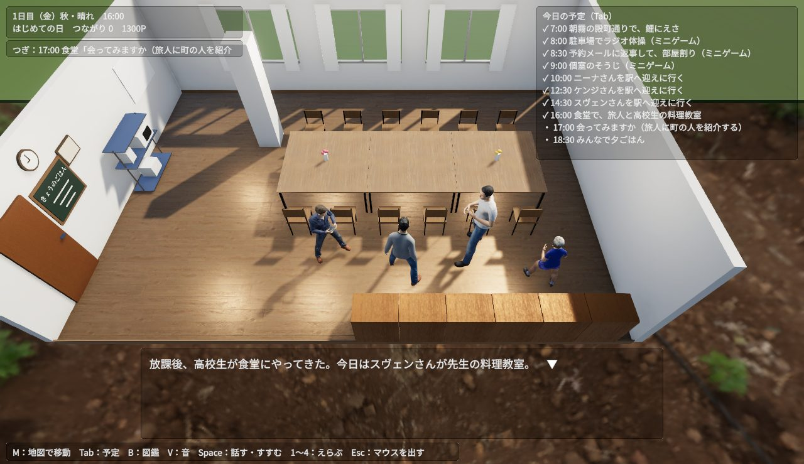
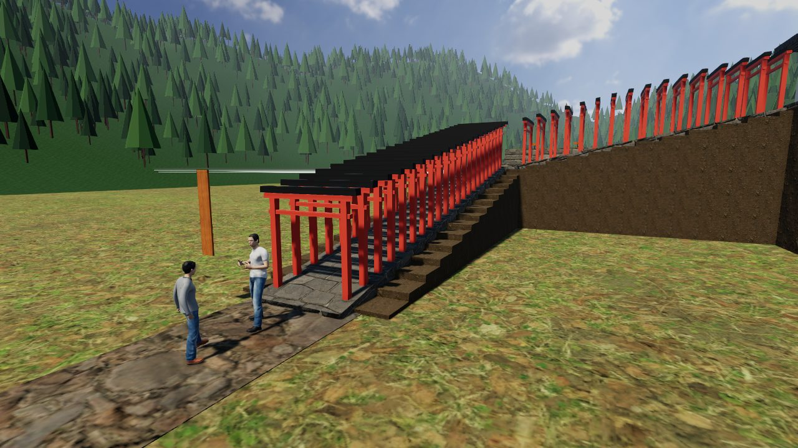
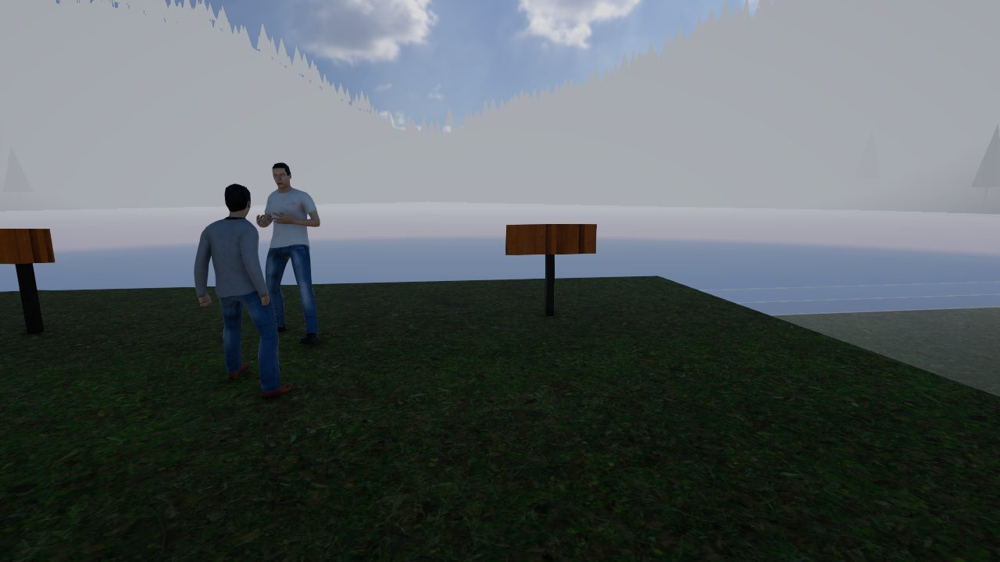
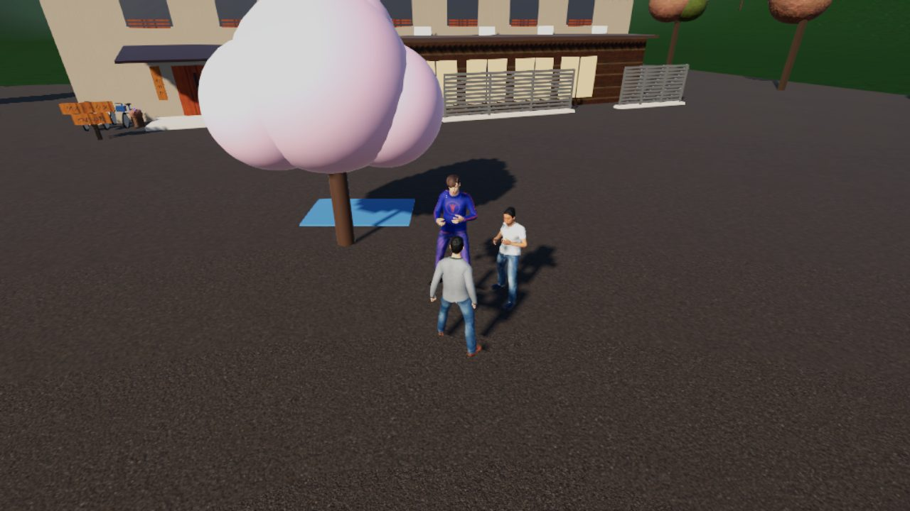
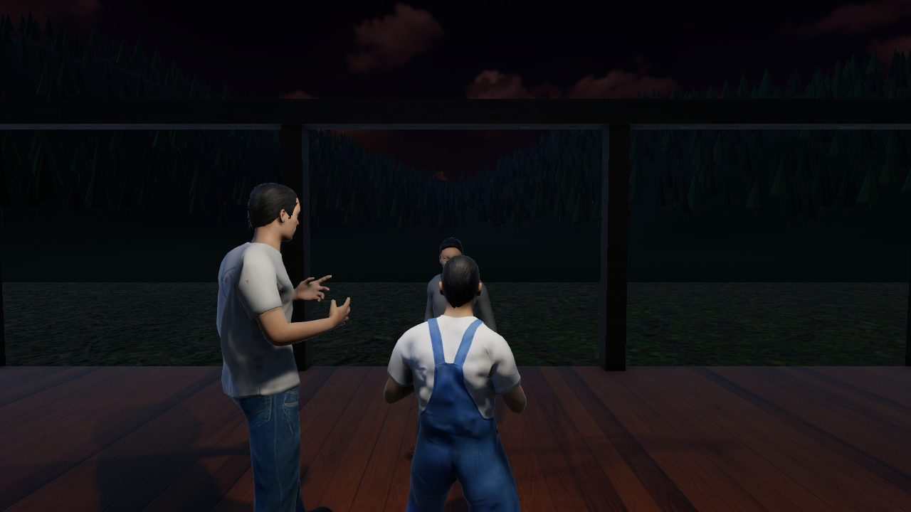
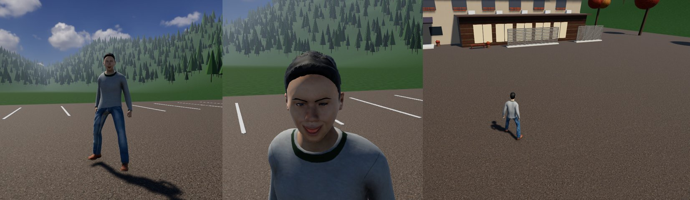

どんなゲーム？
毎日、なにかひとつ面白いことが起きる
朝のラジオ体操から、夜の日記まで。ゲームの1日は、だいたい20分。予約の返事、部屋のそうじ、駅への迎え……ふだんの仕事のあいまに、旅人と町の人のあいだで小さなできごとが起きます。

毎日ちがう、小さなできごと
河原でフリスビー、食堂でナンの会、公民館で神楽の練習。季節ごとのできごとも待っています。

人をつなぐと、物語が動く
「会ってみますか？」の一声で、旅人と町の人が出会います。何日もかけて進む物語が、いくつもあります。

えらんだことが、残っていく
もらった手紙をかべにはる、空き家にあかりがつく。あなたのえらんだことが、次の日の寮や町に残ります。
1日の流れ
家守の1日
することは、画面の右上の「今日の予定」に出ています。予定どおりに進めても、寄り道しても大丈夫。
- 朝寮の前でラジオ体操体操のあとの立ち話が、じつは本番。
- 午前予約の返事・部屋割り・そうじ小さなミニゲームで、寮の仕事をこなします。
- 昼駅へ迎えに行って、町を案内世界中から、いろんな旅人がやってきます。
- 夕方今日のできごと食堂・河原・公民館・神社……どこで何が起きるかは、その日しだい。
- 夜日記を書いて、おやすみ今日あったことが、青柳さんの日記になります。

操作
パソコンでも、スマホでも
ゲームの中でも、タイトル画面の「遊び方」から、いつでも見なおせます。
パソコン（キーボードとマウス）
- WASD / 矢印
- 歩く
- Shift
- 走る
- マウス
- まわりを見る（画面をクリックしてから）
- Space
- 話す・会話をすすめる
- 1〜4
- えらぶ
- Tab
- 今日の予定
- M
- 地図（ほかの場所へ行く）
- B
- 図鑑
- V
- 音を消す・出す
- Esc
- マウスを画面から出す
スマホ・タブレット（指で）
- 画面の左がわ
- なぞって歩く（大きくなぞると走る）
- 画面の右がわ
- なぞって、まわりを見る
- 「話す」ボタン
- 近くの人と話す
- 会話の枠
- タップして、すすむ
- 「予定」「地図」
- 今日の予定・ほかの場所へ
ミニゲームは、スマホではおまかせで進みます。横向きの画面がおすすめです。
はじめての人へ
最初の5分は、こう遊ぶ
迷ったら、とりあえず「今日の予定」を見ればOK。
- 「はじめから」を押すタイトル画面で。遊んだところは自動で保存されます。
- あいさつを読む青柳さんが、寮のことを話してくれます。
- 予定を見るTab（スマホは「予定」）。いちばん上が、次にすること。
- ラジオ体操へ寮の前の駐車場へ。近づいて Space。
- 地図で出かけるMで駅や町へ。旅人を迎えに行こう。
行ける場所
津和野の町を歩く
地図から、10の場所へ行けます。お店や場所は、津和野町に本当にあるものをもとにしています。




ほかにも：殿町通り・本町通り／津和野高校／津和野駅／津和野川の河原。
コツと、よくある質問
知っておくと、もっと楽しい
なにをすればいいか、わからなくなった
Tab（スマホは「予定」）で今日の予定を見てください。次にすることと、その場所が出ています。頭の上に「！」が出ている人は、話しかけると何かがあります。
つづきから遊べる？
自動で保存されます。同じブラウザでもう一度開けば、タイトル画面の「つづきから」で、その日から再開できます。
音を出したくない
上の「音なしで遊ぶ」から始めるか、ゲームの中で V を押してください。
なかなか始まらない
はじめの読みこみは約55MBあります。Wi‑Fi のある場所がおすすめです。2回目からは早くなります。
旅人と町の人を会わせるには？
夕方の「会ってみますか」の時間に、旅人に話しかけます。だれに会わせるかで、そのあとのできごとが変わります。
ゲームの1年って？
60日目がゲームの1年。その夜に、出会った人や物語をふりかえる「1年のアルバム」が見られます。

このゲームについて
主人公は、本当の家守さん
つわの寮は、島根県津和野町に本当にあるゲストハウスです。主人公の青柳さんは、つわの寮の本当の家守さん（ご本人の了承をいただいています）。ラジオ体操、料理の会、英語でおもてなし講座……ゲームのできごとの多くは、青柳さんが町で本当にしてきたことをもとにしています。
旅人・町の人・高校生は、みんな架空の人です。